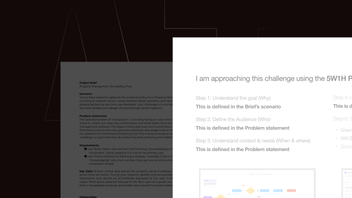
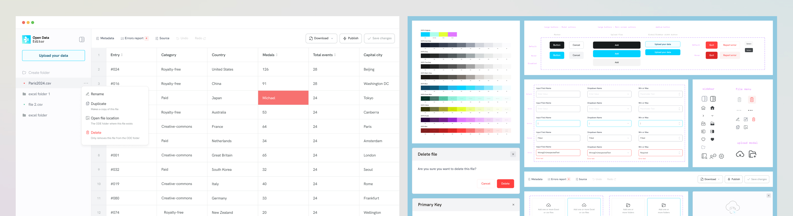
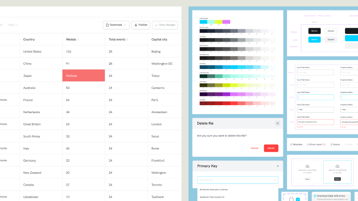

Transcend.io's ROPA
Transcend.io's ROPA
Vanitylvrs

AI fluency: Solving a Design challenge
Screensavers

OKFN.org's Open Data Editor

OKFN.org's Open Data Editor

AI fluency: Solving a Design challenge

Qacehomes - real estate
Transcend - enterprise B2B Data Governance